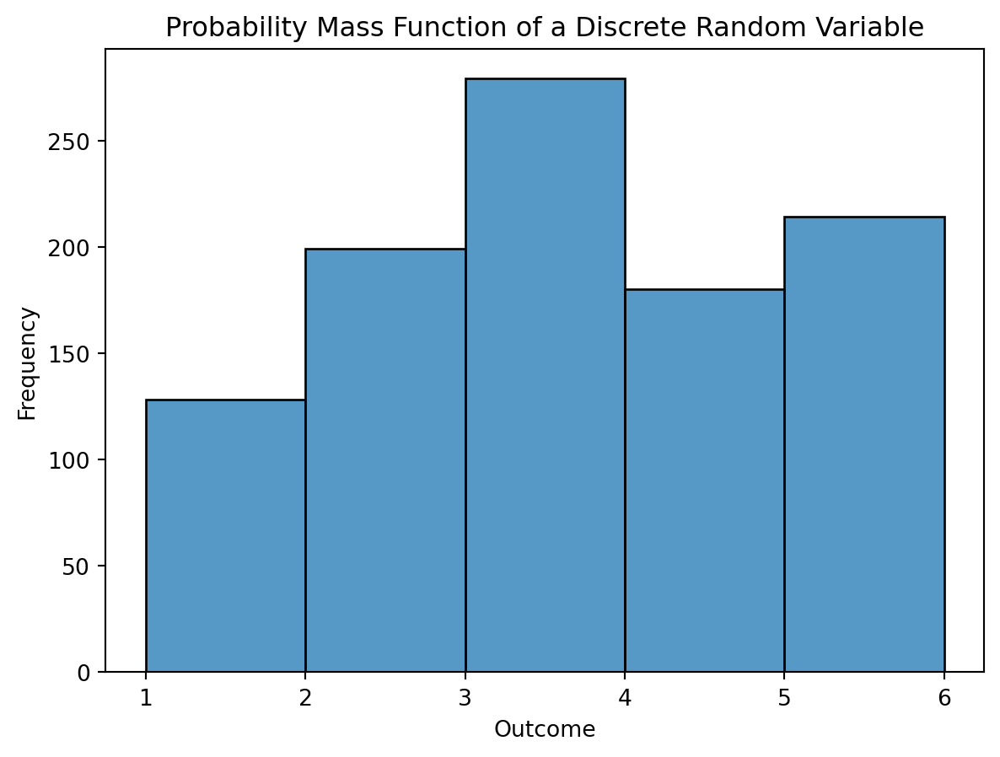
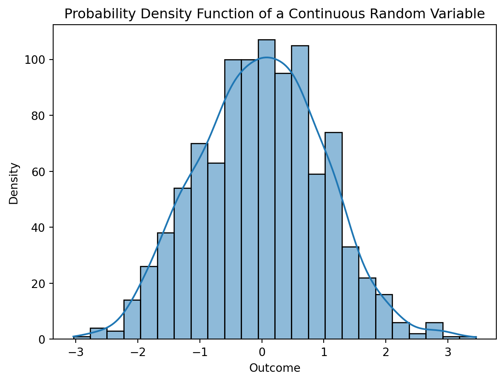
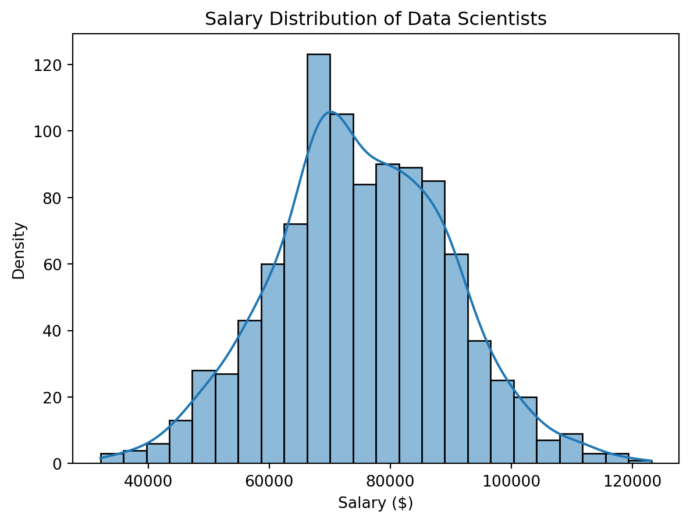

Probability Theory and Random Variables are the cornerstones of understanding uncertainty and variability in the realm of mathematics and statistics. These concepts play a pivotal role in diverse fields such as data science, finance, engineering, and beyond. In this comprehensive exploration, we will delve into the fundamental principles of Probability Theory and the significance of Random Variables in modeling real-world phenomena.
Probability Theory: A Foundation for Uncertainty:
At its core, Probability Theory is a mathematical framework that quantifies uncertainty. It provides us with a systematic way to model and analyze random events and uncertain outcomes. The theory rests on the concept of a sample space, representing all possible outcomes of a random experiment, and events, which are subsets of the sample space.
Probability Basics: Probability is expressed as a number between 0 and 1, where 0 indicates impossibility, 1 denotes certainty, and values in between represent degrees of likelihood. The probability of an event A is denoted as P(A).
Code
import matplotlib.pyplot as pltimport numpy as np# Example: Tossing a fair coinoutcomes = ['Heads', 'Tails']probabilities = [0.5, 0.5]plt.bar(outcomes, probabilities, color=['blue', 'orange'])plt.title('Probability Distribution of a Fair Coin')plt.xlabel('Outcome')plt.ylabel('Probability')plt.show()
Probability Rules: Probability Theory is governed by fundamental rules such as the addition rule (P(A ∪ B) = P(A) + P(B) - P(A ∩ B)) and the multiplication rule (P(A ∩ B) = P(A) * P(B|A)), guiding the computation of probabilities for combined events.
Random Variables: Bridging Theory and Reality:
Random Variables provide a powerful bridge between the theoretical constructs of Probability Theory and the practical modeling of uncertain phenomena. A Random Variable is a variable whose possible values are outcomes of a random phenomenon. Let’s explore key aspects:
Discrete vs. Continuous Random Variables: Random Variables can be categorized as discrete or continuous. Discrete Random Variables take on distinct values, often integers, while continuous ones can assume any value within a specified range.
Code
import seaborn as sns# Example: Discrete Random Variabledata = np.random.choice([1, 2, 3, 4, 5], size=1000, p=[0.1, 0.2, 0.3, 0.2, 0.2])sns.histplot(data, bins=[1, 2, 3, 4, 5, 6], kde=False)plt.title('Probability Mass Function of a Discrete Random Variable')plt.xlabel('Outcome')plt.ylabel('Frequency')plt.show()

Probability Mass Functions (PMF) and Probability Density Functions (PDF): The probability distribution of a discrete Random Variable is described by its Probability Mass Function (PMF), while a continuous Random Variable is characterized by its Probability Density Function (PDF). These functions help quantify the likelihood of different outcomes.
Expectation and Variance: The expectation (mean) and variance of a Random Variable provide insights into its central tendency and degree of variability, crucial metrics for understanding the underlying probability distribution.
Code
# Example: Continuous Random Variabledata_continuous = np.random.normal(loc=0, scale=1, size=1000)sns.histplot(data_continuous, kde=True)plt.title('Probability Density Function of a Continuous Random Variable')plt.xlabel('Outcome')plt.ylabel('Density')plt.show()

Applications in Real-World Scenarios:
Probability Theory and Random Variables find extensive applications in various fields.
Finance: In finance, these concepts are instrumental in modeling asset prices, risk assessment, and portfolio optimization.
Data Science: Probability Theory underpins statistical inference and machine learning algorithms, contributing to predictive modeling and decision-making.
Code
import scipy.stats as stats# Example: Normal Distribution in Data Sciencedata_scientist_salaries = stats.norm(loc=75000, scale=15000).rvs(1000)sns.histplot(data_scientist_salaries, kde=True)plt.title('Salary Distribution of Data Scientists')plt.xlabel('Salary ($)')plt.ylabel('Density')plt.show()

Engineering: Engineers use these principles for reliability analysis, ensuring the robustness of structures and systems.
Conclusion:
Probability Theory and Random Variables serve as the bedrock for navigating uncertainty, enabling us to make informed decisions and predictions across diverse domains. Whether unraveling the mysteries of chance or harnessing the power of statistics in practical applications, a profound understanding of these concepts is indispensable. This exploration merely scratches the surface, inviting curious minds to delve deeper into the fascinating world of probability and randomness.